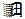
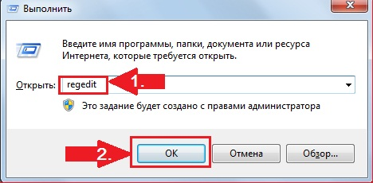

Диск-Х - програма, яка дозволяє підключити хмарні сховища як жорсткі диски на комп'ютерах Windows. В даний момент підтримуються Хмара Mail.Ru, Яндекс.Діск, Dropbox і Google Drive
| Ліцензія: |
Безкоштовно (1 аккаунт Dropbox) |
Як продовжити пробний період
- одночасно натискаємо на клавіатурі дві клавіші  і R
- у вікні «Виконати» знаходимо рядок пошуку і вбиваємо в неї слово regedit:

- одночасно натискаємо на клавіатурі одну клавішу F3
- вікні «Пошук» знаходимо рядок пошуку і вбиваємо в неї слово Disko
- одночасно натискаємо на клавіатурі одну клавішу Delete